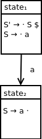
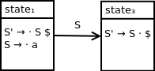
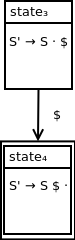

Our language
The language we will be analyzing is specified by the following grammar:
S → a
This grammar has the following augmented grammar:
S' → S $
S → a
Recall that this grammar has the following corresponding LR(0) DFA:
![DFA containing four states. State 1 contains the following productions: S prime produces dot S $, S produces dot a. State 2 contains the following production: S prime produces S a dot. State 1 transitions to state 2 on terminal symbol a. State 3 contains the following production: S prime produces S dot $. State 1 transitions to state 3 on nonterminal symbol S. State 4 contains the following production: S prime produces S $ dot. State 3 transitions to state 4 on end of string symbol $. State 4 is an accepting state.](assets/singleterminaldfa4parsestates.png)
We've seen the motivation for building up a process to convert an LR(0) DFA into a parse table.
In this section, we will illustrate an example of this process for a simple CFG that produces a single-terminal string.
The language we will be analyzing is specified by the following grammar:
S → a
This grammar has the following augmented grammar:
S' → S $
S → a
Recall that this grammar has the following corresponding LR(0) DFA:
We know that the basic structure of an LR(0) parse table is as follows:
| sym1 | sym2 | ... | symn | |
| state1 | an1,t1 | an1,t2 | ... | an1,tn |
| state2 | an2,t1 | an2,t2 | ... | an2,tn |
| ... | ||||
| staten | ann,t1 | ann,t2 | ... | ann,tn |
for ti ∈ Σ ∪ $, symi ∈ T ∪ N ∪ $, ani,tj ∈ A ∪ ø.
From our DFA, we can easily pick out our states and symbols as follows:
States = {state1, state2, state3, state4}
T = {a}
N = {S, S'}
From this, we know that symi ∈ {a, $, S, S'}. Note that we order our set this way for convenience.
Filling in the structure of the table, we end up with:
| a | $ | S | S' | |
| state1 | ||||
| state2 | ||||
| state3 | ||||
| state4 |
Observe the following state transition in our DFA:
When we are in state1 and encounter terminal a, we want to shift a onto the parse stack and transition to state2, as illustrated by the transition in the DFA above.
Filling this action in within our parse table, we have:
| a | $ | S | S' | |
| state1 | shift2 | |||
| state2 | ||||
| state3 | ||||
| state4 |
Next, observe the qualified production in state2:
S → a ·
Since the dot appears at the right-hand side of the production, we know that we have processed all symbols on the right-hand side of this production by this point.
As a result, we know we need to apply a reduce action from this state.
Since the production S → a is the second production in our augmented grammar, we know that the action we will be adding to our parse table is reduce2. However, which symbols will we be applying this action for?
We know that, when about to apply this reduce action, we will not have a nonterminal symbol on the top of our parse stack. This is because a nonterminal would only be on top right after a reduce action and before the corresponding goto action.
Because of this, we only need to consider the set of symbols {a, $}. In our current state, we don't have any additional information about the next input symbol. As a result, we add this action for each of these symbols as follows:
| a | $ | S | S' | |
| state1 | shift2 | |||
| state2 | reduce2 | reduce2 | ||
| state3 | ||||
| state4 |
Observe the following state transition in our DFA:
After we reduce terminal a to nonterminal A, we will be in state1 with A on the top of our parse stack.
We need to transition to state3 so that we can subsequently accept the input string if the end of string is encountered.
As a result, we need to add an action of goto3 from state1 when nonterminal symbol S is encountered. We can update the parse table as follows:
| a | $ | S | S' | |
| state1 | shift2 | goto3 | ||
| state2 | reduce2 | reduce2 | ||
| state3 | ||||
| state4 |
Next, observe the following state transition:
Observe how, from state3, if the end of string symbol is encountered, we can transition to state4 and immediately accept.
Since we only need to encounter one symbol (the end of string symbol) from state3, we can immediately accept the input string from there in this case without needing to handle state4 explicitly, as follows:
| a | $ | S | S' | |
| state1 | shift2 | goto3 | ||
| state2 | reduce2 | reduce2 | ||
| state3 | accept | |||
| state4 |
Note that the row corresponding to state4 and the column corresponding to S' can optionally be eliminated from the parse table, since there are no legitimate actions present in those sections of the table.
We have seen the process for generating an LR(0) parse table for a grammar that produces a single-terminal string.
In the next section, we will look at extending this process to handle a grammar that produces a multi-terminal string.
GitHub Repository: https://github.com/bprollinson/ripal
Copyright © 2017 Brendan Rollinson-Lorimer